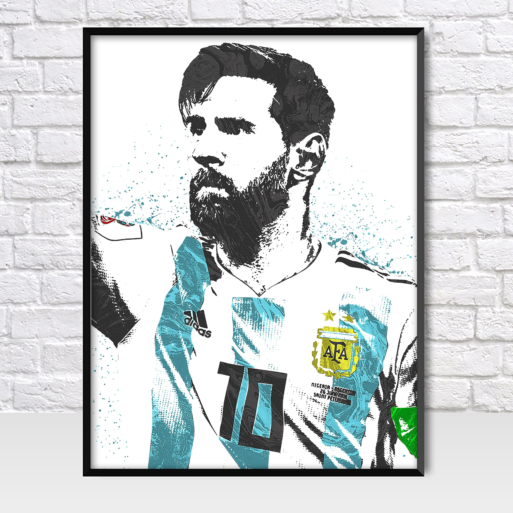

Lionel Messi
El mejor futbolista del mundo

Lionel Andrés Messi festeja un gol con la selección argentina.
Distinciones individuales:
- Balón de Oro 2009 - El Balón de oro es un trofeo de prestigio mundial organizado por la revista France Football que recompensa al mejor futbolista del mundo.
- Jugador Mundial de la FIFA 2009 - El argentino Lionel Messi del FC Barcelona logró alzarse con el premio; mientras que el astro portugués del Real Madrid, Cristiano Ronaldo, se adjudicó el segundo puesto.
- FIFA Balón de Oro 2010 - Esta edición fue la primera en la historia tras la fusión de las dos máximas distinciones mundiales: el "Ballon d'Or" otorgado por la revista francesa France Football y el "FIFA World Player" que concedía la FIFA.
- Bota de Oro 2009-10 - La Bota de Oro 2009–10 fue un premio entregado por la European Sports Magazines al futbolista que logró la mejor puntuación luego de promediar los goles obtenidos en la temporada europea.
- FIFA Balón de Oro 2011 - El premio FIFA Balón de Oro 2011 tuvo lugar en Zúrich (Suiza) el 9 de enero de 2012. Messi recibió por tercera vez consecutiva el título del mejor jugador del mundo.
- Premio UEFA al Mejor Jugador en Europa - La distinción se entregó en la ciudad de Mónaco, Francia, el 25 de agosto de 2011. El ganador de la primera edición fue el argentino, con un total de 39 votos, seguido por su compañero Xavi Hernández.
- FIFA Balón de Oro 2012 - La gala FIFA Balón de Oro 2012 fue la tercera edición de esta entrega de premios organizados anualmente por la FIFA. Las distinciones se dividieron en 8 categorías: mejor jugador, mejor jugadora, mejor entrenador de categorías masculina y femenina, XI Mundial FIFA/FIFPro, Premio Puskas, Premio Presidencial y Premio Fair Play.
- Bota de Oro 2011-12 - El ganador de este premio fue el jugador argentino Lionel Messi por haber logrado 50 goles en la Primera División de España. De esta manera Messi se convierte en el primer futbolista en la historia de este premio en anotar cincuenta goles o más.
- Bota de Oro 2012-13 - Lionel Messi logró 46 goles en la Primera División de España y se convirtió en máximo ganador del trofeo tras ganarlo por tercera vez.
- Balón de Oro de la Copa Mundial de Fútbol 2014 - El argentino consiguió el Balón de Oro (comercializado como Balón de Oro de Adidas), entregado desde 1982 al mejor jugador del torneo luego de haber llegado a la final con su selección.
- Balón de Oro de la Copa América - Tentativamente otorgado a Lionel Messi; ante su rechazo al galardón, la organización retiró el premio.
- FIFA Balón de Oro 2015 - La gala FIFA Balón de Oro 2015 fue la sexta y última edición de esta entrega de premios organizada anualmente por la FIFA. Los premios tuvieron lugar como cada año, en Zúrich, Suiza, el 11 de enero de 2016.
- Premio UEFA al Mejor Jugador en Europa - La distinción le fue entregada al ganador, Lionel Messi, en la ciudad de Mónaco, Francia, el 27 de agosto de 2015.
- Bota de Oro 2016-17 - El ganador de este premio fue el jugador argentino Lionel Messi, por haber conseguido 37 goles en la Primera División de España. Contando esta, Messi logra hacerse con este galardón cuatro veces, y de igualar a Cristiano Ronaldo como máximo ganador del mencionado premio.
- Bota de Oro 2017-18 - El ganador de este premio fue el argentino Lionel Messi, con un total de 34 goles en la Primera División de España. Contando esta, Messi logró hacerse con este galardón hasta la fecha, cinco veces, y de superar así a Cristiano Ronaldo como máximo ganador del mencionado premio.
- Bota de Oro 2018-19 - El ganador de este premio fue el argentino Lionel Messi, con un total de 36 goles en la Primera División de España. Messi logró hacerse así con este galardón, por tercera vez consecutiva, y hasta seis veces en total como máximo ganador del mencionado premio.
- The Best FIFA 2019 - The Best FIFA Football Awards se celebraron el 23 de septiembre de 2019 en Milán, Italia. Los criterios de selección para los jugadores del año fueron: el rendimiento deportivo.El ganador fue Lionel Messi.
- Balón de Oro 2019 - La ceremonia de entrega del premio tuvo lugar el lunes 2 de diciembre de 2019. Lionel Messi ganó el premio por sexta vez en su carrera, convirtiéndose así en el jugador más laureado al ganarlo en 2009, 2010, 2011, 2012, 2015, 2019.
- Premio Laureus - Los Premios Laureus World Sports son unos galardones anuales que concede la Academia Laureus World Sports a los mejores deportistas del mundo por los méritos contraídos durante el año anterior, tanto de forma individual como colectiva.
- Once histórico del Balón de Oro - El Dream Team del Balón de Oro es un equipo compuesto por los mejores jugadores de todos los tiempos, publicado por la revista France Football el 14 de diciembre de 2020 tras realizar una encuesta on-line a los aficionados para formar un equipo de fútbol de ensueño.
- Balon de oro Copa América 2021 - El capitán de la selección de Argentina disputó los siete partidos completos, fue uno de los goleadores y el mayor asistidor y el jugador del partido en cuatro ocasiones (contra Chile, Uruguay y Bolivia en la Fase de grupos, y contra Ecuador en Cuartos de final).
"Ahora ya sé qué jugador ocupará mi sitio en el fútbol y su nombre es Lionel Messi. Tiene algo distinto de cualquier otro jugador. Es un líder que lo demuestra dando ejemplo"
- Diego Armando Maradona
- Diego Armando Maradona